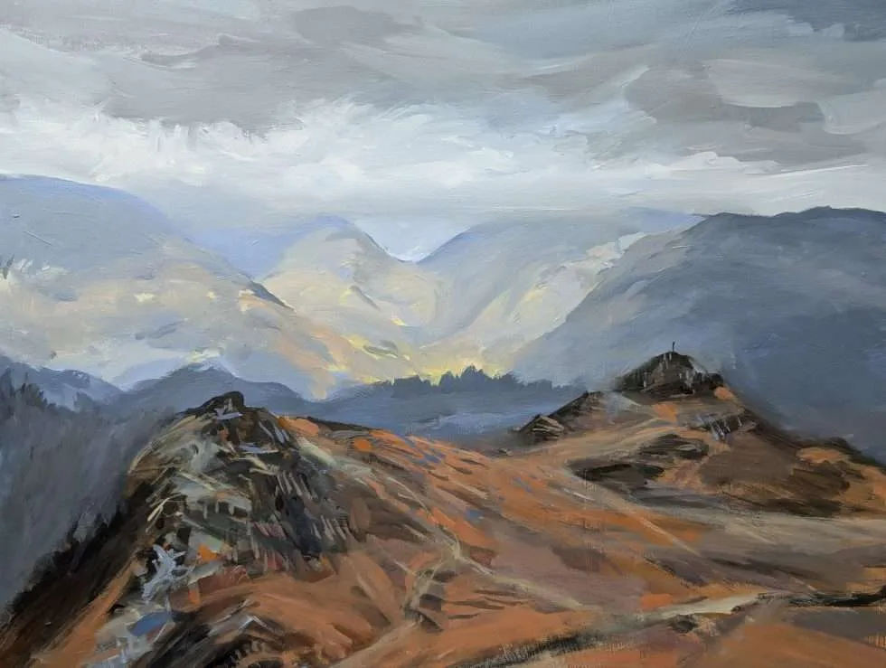
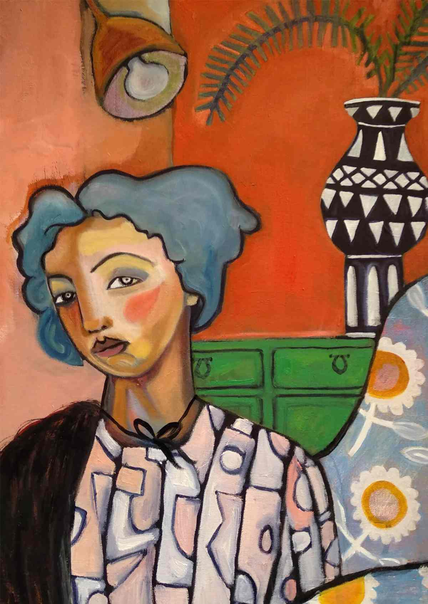
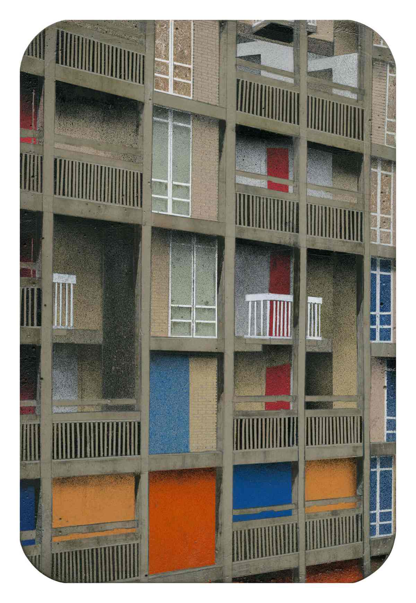
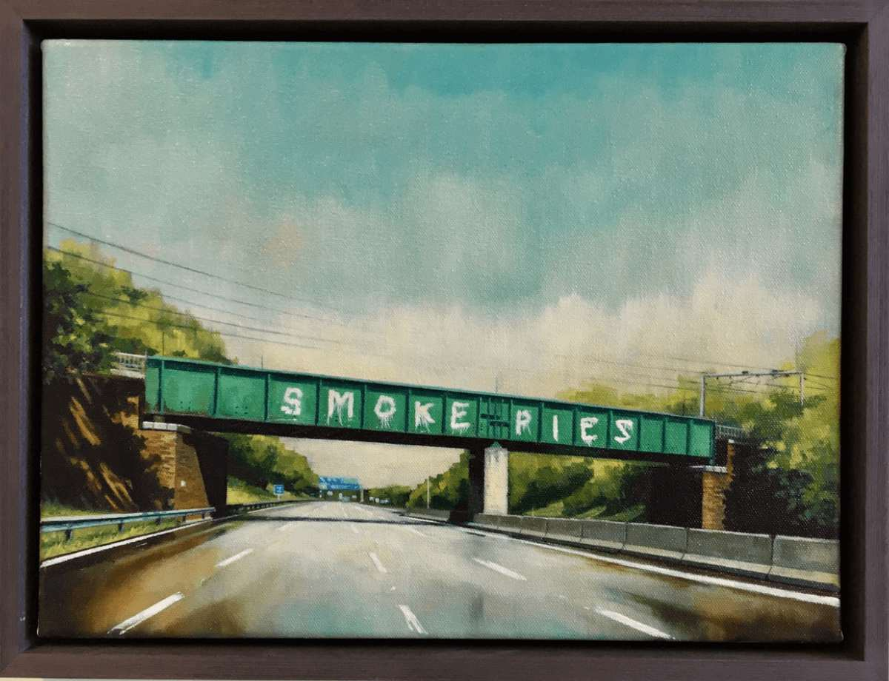

David Pott is a lancashire artist inspired by the landscape of the Lake District

Kerry Louise Bennet is a self taught expressive painter. At the Festival, Louise Bennet will be showcasing artwork

Mandy Payne is an award winning painter based in Sheffield. Her work is inspired by urba landscapes. At this year's Festival, fans can expect Mandy to start of creating a painting.

At this year's Festival, fans can expect Artwork of places around Burnley like their famous Northbound Pies in Burnley.
